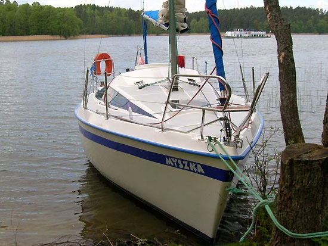

Tango780
Tango780

Opis:
Jacht rodzinny, cieszący się dużą popularnością wśród żeglarzy, ceniących komfort i wygodę. Duży kokpit zakończony półokrągłą pawężą, zapewniającą bezpieczeństwo zwłaszcza dla najmłodszych członków załogi. Pomimo pawęży w kokpicie może swobodnie przebywać pięciu żeglarzy. Wszystkie szoty zbiegają się w kokpicie. Kabina podzielona jest na dwa przedziały – dziobowy i kambuzowy.
Jacht rodzinny, cieszący się dużą popularnością wśród żeglarzy, ceniących komfort i wygodę. Duży kokpit zakończony półokrągłą pawężą, zapewniającą bezpieczeństwo zwłaszcza dla najmłodszych członków załogi. Pomimo pawęży w kokpicie może swobodnie przebywać pięciu żeglarzy. Wszystkie szoty zbiegają się w kokpicie. Kabina podzielona jest na dwa przedziały – dziobowy i kambuzowy.
Zdjęcie Pokładu

Dane techniczne:
długość kadłuba: 780 cm
szerokość maksymalna: 270 cm
zanurzenie minimalne: 30 cm
zanurzenie maksymalne: 145 cm
waga całkowita: 1,8 tony (w tym balast 0,3)
liczba koi: 4-6
maksymalna liczba załogi: 6
powierzchnia żagli: 28 m2 (grot 18 + fok 10 m2)
długość kadłuba: 780 cm
szerokość maksymalna: 270 cm
zanurzenie minimalne: 30 cm
zanurzenie maksymalne: 145 cm
waga całkowita: 1,8 tony (w tym balast 0,3)
liczba koi: 4-6
maksymalna liczba załogi: 6
powierzchnia żagli: 28 m2 (grot 18 + fok 10 m2)
Żagiel

Wypożyczalnia jachtów! © Wszelkie prawa zastrzeżone